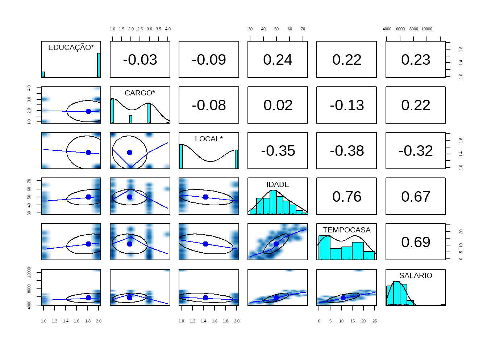

setwd('C:/Users/mario Dhiego/Documents/Modelo_Regresao1/Modelo_Regresao1')1 Análise Exploratória
Primeiro Passo é definir o diretório de trabalho no R
Segundo Passo é carregar a base de dados, chamada de mercado. Para isso é necessário instalar o pacote para leitura de arquivo com extensão do tipo excel(.xlsx) por meio do comando install.packages(“readxl”).
Posteriormente, ativar o pacote no R com o comando library(readxl). Tendo um detalhe fundamental, que se instala somente um vez o pacote, e se ativa toda vez que for usar.
library(readxl)
mercado <- read_excel('mercado.xlsx')
mercado2 <- read_excel('mercado2.xlsx')1.1 Variáveis Qualitativas
1.1.1 Tabelas de Frequência: Simples
table(mercado2$CARGO)
AUXILIAR DIRETOR GERENTE
37 12 30 table(mercado2$EDUCAÇÃO)
SECUNDÁRIO SUPERIOR
15 64 table(mercado2$LOCAL)
CAPITAL INTERIOR
44 35 1.1.2 Tabelas de Frequência: Proporção
prop.table(table(mercado2$CARGO))
AUXILIAR DIRETOR GERENTE
0.4683544 0.1518987 0.3797468 prop.table(table(mercado2$EDUCAÇÃO))
SECUNDÁRIO SUPERIOR
0.1898734 0.8101266 prop.table(table(mercado2$LOCAL))
CAPITAL INTERIOR
0.556962 0.443038 1.2 Variáveis Quantitativas
1.2.1 Medidas Resumo Geral
summary(mercado2$IDADE) Min. 1st Qu. Median Mean 3rd Qu. Max.
30.00 43.50 49.00 49.62 55.50 72.00 summary(mercado2$TEMPOCASA) Min. 1st Qu. Median Mean 3rd Qu. Max.
0.0 3.5 12.0 10.8 16.5 25.0 summary(mercado2$SALARIO) Min. 1st Qu. Median Mean 3rd Qu. Max.
4187 4894 5660 5693 6270 7481 1.2.2 Interpretação p/ Salário
o 1º quartil(1 st Qu.) indica que 25% dos funcionários têm renda salarial menor ou igual a R$ 4.894 e o 3º quartil(3 rd Qu.) indica que 75% têm renda menor ou igual a R$ 6.306.
Estes dois valores indicam que 50% dos funcionários tem renda nesse intervalo, o que já nos dá uma idéia de variabilidade da Renda.
Quanto maior a diferença entre o 3º e o 1º quartil, maior a dispersão da variável.
1.2.3 Relação Gráfica: Variáveis Quantitativas
A função pairs.panels() do pacote psych no R gera um figura com os gráficos de dispersão 2 a 2, os histogramas de cada variável e as correlações das variaveis 2 a 2.
library(psych)
pairs.panels(mercado,
smoother = TRUE)